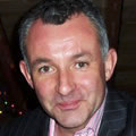
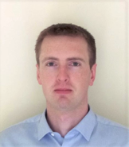
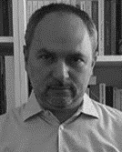
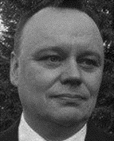

| Keynote 1 | |
| Time | Wednesday, May 15 - 10:00-10:45 (BST) |
| Speaker | Professor Paul O Brien |
|  | |
| Affiliation(s) | Elaros, UK |
| Abstract | TBA |
| About the speaker |
"Professor Paul O’ Brien was appointed CEO of ELAROS 24/7 in April 2012. Paul has held senior posts in the private sector (Chief Executive), local government (Chief Officer), health (Director in West Essex NHS Trust) and education (Head of Department). He has previous venture start-up experience having established the Essex Development and Regeneration Agency with a turnover of £8.5 million and funds under management of £15 million – employing 60 planners, economists, surveyors, bid writers and fund managers. He has extensive experience of public sector transformation having externalised a local government service and more recently the externalisation of a £33 Million NHS Service. Paul also has broad non-executive board experience gained over a 15 year period and has completed the Institute of Directors Diploma in Company Direction. He is a visiting lecturer to the University of Surrey on its MBA & MSc Entrepreneurship programmes." |
| [Back to Program] | |
| Keynote 2 | |
| Time | Thursday, May 16 - 10:00-10:45 (BST) |
| Speaker | Dr Richard Gault |
|  | |
| Affiliation(s) | Queen's University, Belfast |
| Abstract | TBA |
| About the speaker |
"Dr Richard Gault is a Lecturer (Assistant Professor) of Artificial Intelligence (AI) at Queen’s University, Belfast within the School of Electronics, Electrical Engineering and Computer Science and is a Fellow of the Global Innovation Institute at Queen’s. He obtained his MSci in Mathematics and Computer Science from Queen’s (2013) before obtaining his PhD in Computer Science from Ulster University (2017). Dr Gault’s work explores the use of AI in medical applications including the development of novel deep learning methodologies for medical imaging data in collaboration with multidisciplinary teams around the world. Additionally, his research interests include computational neuroscience and specifically the modelling of sensory processing related to tinnitus and the retinal encoding of images. He is chair of the UK and Ireland chapter for the IEEE Engineering in Medicine and Biology Society and a Senior Fellow of the IEEE. He has published in a range of leading international conferences and journals, has secured over £300k in project funding from various bodies - including Rosetrees Trust and EPSRC - and is a member of the UKRI EPSRC Reviewer College and a member of funding review panels for RNID and the American Tinnitus Association." |
| [Back to Program] | |
| Keynote 3 | |
| Time | Thursday, May 16 - 14:15 - 15:00 (BST) |
| Speaker | Professor Carloline Li |

|
|
| Affiliation(s) | City University of London |
| Abstract | Leveraging Data Science for Future Health |
| About the speaker |
TBA |
| [Back to Program] | |
| Special Session: Latest Status of Standards on Wireless Body Area Network(BAN) in IEEE802 and ETSI | |
| Time | Friday, May 16 - 11:15 - 13:00 (BST) |
| Chair | Professor Ryuji Kohno |
| Affiliation(s) | Yokohama National University and YRP International Alliance Institute, Japan |
| Title | IEEE802.15.6ma Standard on Dependable BAN for Human and Vehicle Bodies |
| Abstract |
"Wireless Body Area Network (BAN) has been researched and developed for digital medicine and its standard like IEEE802.15.6 and ESTI Smart BAN are now on amendment and revision. In particular, the revision IEEE802.15.6ma has been focusing on enhanced dependability of wireless BAN and extended to automotive use cases for autonomous driving and remote maintenance of vehicle body as well as highly dependable Brain-Machine-Interface (BMI) for human wearable and implant medical healthcare devices. For the revision with enhanced dependability various physical and MAC layers of technologies have been proposed and applied for the new standard. For instance, cognitive channel coding corresponding to required QoS levels of packets and coexistence environment with same BANs and other radios. Hybrid MAC of contention access and free protocols corresponding to QoS levels and coexistence environments etc. A new market of such a dependable BAN for human and vehicle bodies has been expanding and covering a new service for driving assistance such as human errors in driving with vehicle BAN and AI for elderly drivers etc. It makes a new paradigm of automotive and medical healthcare industries. Device benders of Ultra-Wide Band (UWB) may have more motivation to develop a new device of ranging and communication. ETSI Smart BAN has been focusing on smarter implementation for human BAN for medical healthcare devices with standard of data container format etc. It may have common specification with ETSI Smart M2M. The special session can introduce latest progress of the BAN standards and required technologies and possible innovation in Beyond 5G or 6G with BAN to accomplish some of SDGs by active representatives of academia, industry, and government." |
| About the speaker |
"Ryuji Kohno received the Ph.D. degree from the University of Tokyo in 1984. He was a Professor and the Director of Centre on Medical Information and Communication Technology, in Yokohama National University in Japan for 1998-2021 and then Professor Emeritus. In his currier he played a part-time role of a director of Advanced Telecommunications Laboratory of SONY CSL during 1998-2002, directors of UWB Technology and medical ICT institutes of the National Institute of Information and Communication Technologies (NICT) during 2002-2012. For 2012-2020 he was CEO of University of Oulu Research Institute Japan – CWC-Nippon Co. and since 2020 Vice-President of YRP International Alliance Institute. The meanwhile for 2007-2020 a distinguished professor in University of Oulu in Finland and since 2006 an associate member of the Science Council of Japan(SCJ). In IEEE he was a member of the Board of Governors of Information Theory Society in 2000-2009, and editors of Transactions on Communications, Information Theory, ITS, IEEE802.15 standardization TG6ma Chair and IEEE Life Fellow. In IEICE he was Vice-president of Engineering Sciences Society of IEICE during 2004-2005, Editor-in chief of the IEICE Trans. Fundamentals during 2003-2005 and IEICE Fellow. He is a founder and a chair of steering committees of international symposia of medical information and communication technologies (ISMICT) since 2006, general and TPC chairs in many international conferences such as PIMRC99, SDR02, ISIT03, UWBST04, ISMICT06&15 etc." |
| Speaker 2 | Professor Lorenzo Mucchi |
|  | |
| Affiliation(s) | University of Florence, Italy |
| Abstract |
SmartBAN in Medical/Wellbeing IoT: ETSI standardization |
| About the speaker |
"Prof .Lorenzo Mucchi was born in Rome, Italy, in 1971. He received the Dr.Eng. Degree (Laurea) in Telecommunications Engineering from the University of Florence (Italy) in 1998 and the Ph.D. in Telecommunications and Information Society in 2001. Since 2001 he has been with the Department of Electronics and Telecommunications of the University of Florence as a Research Scientist. His main research areas include theoretical modelling, algorithm design and real measurements, mainly focused on the following fields: physical-layer security and light cryptography, visible light communications, spread spectrum techniques (UWB), localization, body area networks, biometric encryption, molecular communications, diversity techniques and interference management. He is involved in several national and international projects. Dr. Mucchi is a senior member (2012) of the Institute of Electrical and Electronics Engineers (IEEE), member (2009) of the IEEE Communications and Information Security Technical Committee (CISTC) and permanent member (2000) of the International Association of Science and Technology for Development (IASTED) Technical Committee on Telecommunications. Dr. Mucchi is a member of the European Telecommunications Standard Institute (ETSI) Smart Body Area Network (SmartBAN) group (2013) and team leader of the special task force 511 (2016) SmartBAN Performance and Coexistence Verification." |
| Speaker 3 | Professor Matti Hämäläin |
|  | |
| Affiliation(s) | University of Oulu, Finland |
| Abstract |
Unsolved problems and novel technologies in ETSI SmartBAN |
| About the speaker |
Matti Hämäläinen received his M.Sc.,Lic.Tech., and Dr.Sc. degrees in 1994, 2002 and 2006, respectively, all from the Univ. of Oulu, Finland. He has more than 150 international scientific publications. He is co-author of “Wireless UWB Body Area Networks: Using the IEEE802.15.4-2011”. Currently, he is an adjunct professor of CWC, Univ. of Oulu. He was a Guest Professor of Institute of Advanced Science in YNU. He was a general Co-Chair of BodyNets2018 and is a senior member of IEEE. |
| Speaker 4 | Dr. Marco Hernandez |
| Affiliation(s) | YRP International Alliance and University of Oulu, Japan |
| Abstract |
Dependable technologies on MAC and PHY of IEEE802.15.6ma |
| About the speaker |
"Dr. Marco Hernandez won a Ph.D. degree from Delft University of Technology, The Netherlands 2002. He was working in National Institute of Information and Communication Technology (NICT), Japan, Institute Eurecom, Sophia-Antipolis, France as Position Research assistant for May 2001-April 2004, Delft University of Technology, The Netherlands as a Research assistant for January 1997–April 2001 His PhD work on multiuser receivers for WCDMA system is working in YRP International Alliance Institute, Yokosuka, Japan and Centre for Wireless Communications, University of Oulu, Oulu, Finland. His publication topics are ultra-wideband communication,5G mobile communication, UHF filters, access protocols, biomedical communication, body area networks, body sensor networks, condition monitoring, electromagnetic interference, health care, intercarrier interference, modulation, synchronisation, wireless LAN, maximum likelihood estimation, wireless channels, channel estimation, audio transceivers, wavelet transforms, error statistics, matched filters, matrix inversion, multipath channels, personal area networks, radiofrequency identification." |
| [Back to Program] | |